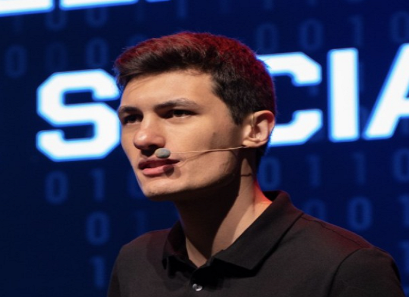

07 Agosto 2022
Conheço a Legião do TDI

Ao começar o segundo período da Faculdade é sentindo falta de aulas
práticas, lá estavá eu procurando vídeos no youtube para estudar e me
deparo com um homem que me diz a sequinte frase
"O Mundo Precissa de Hackers"; Este era Bruno Fraga,
criador do Técnicas de Invasão (TDI, como conhecido).
Através de
seus Intensivãos sobre Hacking, Bruno me explicou sobre os pilares e
normas da segurança da Informação, e como Harckers pensam e trabalham
para atacar, destruir e salvar vidas:
"A melhor forma de deter um harcker é saber como eles fazem para
atacar."
essa erá uma de suas frases, durante as aulas. Alí estava decidido eu
me tornaria um Hack-Ético.
Pórem faltava duas coisas para mim: Um PC que aquentasse o trabalho e
Saber Programar, pois de acordo com Bruno
"Um hacker que sabe programar tem muito mais vantagens, do que um
que apenas sabe hackear"
06 de Março de 2023
Primeiro Estágio em Strata Engenharia
No dia 06 de março, comecei o meu estágio na
Strata Engenharia; Gerson sendo o meu Pastor, e um
exemplo de Pai na minha vida, me orientou sobre formas comportamentais
é etícas de como agir no trabalho, na sociedade, e em casa. Mesmo
ainda não sabendo programar Gerson me confiou nas mãos dos gestores de
T.I da Strata; Confesso que foi dificíl pois tive que aprendar o
básico com videos do youtube, já que durante os 2° primeiros meses não
tive um gestor direcionado a área de programação, mas agora com um
acredito que as coisas podem ser diferentes.
11 de maio de 2023
Conheço a Rocketseat
Em meio a muitos vídeos no youtube, conhecir a
Rocketseat, e alguns de seus professores, entre eles
Mayk Brito é Rodrigo Gonçalves, os quais estáriam
fazendo muito em breve a NLW (Next Level Week), para
futuros programadores, apesar de ainda possuir os recursos para
adentrar em um curso pago da Rocketseat é um PC que aguente os
arquivos necéssarios, tenho usado o computador da empressa para
estudar.
Esse projeto aqui é o terceiro que desenvolvo, é o primeiro que
realmente consigo entender; Curioso e nunca desistir, esse um lema a
qual por maior que seja a curiosidade foi ensinado a mim na igreja e
hoje e usado por muitos desenvolvedores e hackers ao redor do mundo.